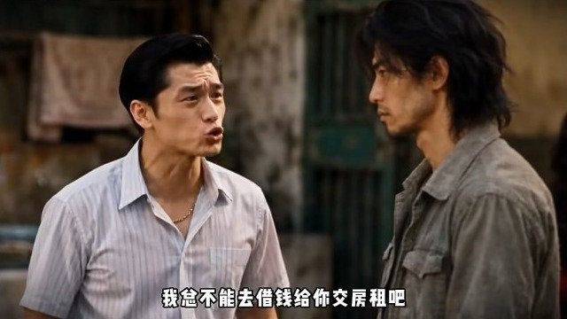
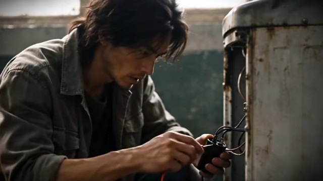
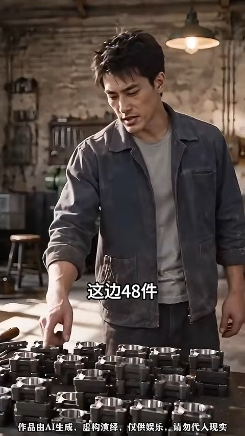

1~5화에서 주도권이 바뀐 순간을 장면으로 풀었습니다. AI 3편에서 모두 6번, 같은 배신 서사의 실사작에서는 한 번도 없었습니다.
누가 뒤집는가억압받던 주인공이 스스로
가해자는 가장 가까운 사람이거나, 持械入宋처럼 맹수와 약탈자 같은 외부의 적입니다.
무엇으로 뒤집는가자기 능력으로
기술, 현대 무기, 회귀라는 두 번째 기회. 귀인이 기회를 줘도 반전을 완성하는 건 주인공입니다.
언제 뒤집는가초반에, 다음 화로 이어서
첫 반격은 누적 2분 30초~8분 30초 안에 오고, 회차 끝은 다음 반전을 예고합니다.
반전의 종류별 횟수, 1~5화 관찰 결과를 묶은 것
관계의 주도권을 되찾는다2회一双手, 추천 자리 양보 거부와 파혼 선언
기술로 실력을 증명한다2회莞城往事, 세탁기 수리와 공장 회로 진단
회귀로 다시 시작한다1회一双手, 1화 끝 “十五年前”
힘으로 제압한다1회持械入宋, 맹수 제압
실사 비교작0회小镇是非多, 억압이 쌓이는 단계
비교 기록표의 반전 기록을 성질에 따라 네 갈래로 묶었습니다. 6회뿐인 작은 표본이라 순위보다 ‘어떤 종류의 반전이 있는가’로 읽어 주세요.
유형마다 직전의 억압과 반전 장면을 나란히 놓았습니다. 장면 시간은 YouTube 합본 기준입니다.
01
관계의 주도권을 되찾는다
一双手闯出一片天, 2화 첫 반격과 5화 파혼 선언
2:00 억압진급 추천을 양보하라는 요구가 되풀이된다
→
2:30 반전“선반공만 십수 년” 이번에는 양보를 거부한다
이어지는 반전
5화 마지막 대사 “这个婚到此为止”, 이 결혼은 여기까지. 파혼을 선언하며 관계를 스스로 정리합니다.
영상으로 보기
전생에서 양보만 하던 바로 그 자리에서 “이제야 내 차례야”라고 말합니다. 억압의 상황을 다시 보여 준 뒤 다른 선택을 하게 해, 짧은 시간에 보상 한 단위가 완성됩니다.
02
기술로 실력을 증명한다
莞城往事, 2화 0:53 무렵 첫 반격, 红果 누적 약 4분

3:12 억압고향 사람마저 “방세 빌려줄 순 없지” 외면한다
→
5:10 전환집주인의 시험 “지금 세탁기 고쳐 봐”
→

5:22 반전세탁기를 고치며 기술로 인정받기 시작한다
같은 성질, 기준작의 후반

40:00 반전수리점에서 자기 손으로 부품을 만든다
1:20:00 반전도면을 검토하며 기술과 품질을 다툰다
영상으로 보기莞城往事는 분석에 쓴 YouTube 합본이 내려가 장면 캡처로만 보여 줍니다.
회귀 같은 초자연적 장치 없이, 귀인이 준 기회를 기술로 붙잡습니다. 一双手도 후반부에서 같은 방식으로 인정받습니다. 두 작품의 공식 “배신당한 기술자가 자신의 능력으로 다시 일어선다”가 반전 장면에서 드러납니다.
03
회귀로 다시 시작한다
一双手闯出一片天, 1화 끝, 红果 1:49
0:50 억압아내가 남편이 아닌 친구의 다리를 먼저 돌본다
→
1:10 억압“즈창 먼저 보내” 주인공은 뒤로 밀린다
→
1:30 반전“十五年前” 죽음 직후 15년 전으로 돌아간다
영상으로 보기
억압이 가장 커진 순간인 죽음에서 이야기 전체를 되돌립니다. 그 자체가 보상이라기보다, 뒤의 반전인 양보 거부, 파혼, 창업을 가능하게 하는 출발 장치입니다. 南方都市报 분석에서도 회귀와 타임슬립이 가장 흔한 출발 장치였습니다.
04
힘으로 제압한다
持械入宋, 5화 무렵 맹수 제압, 红果 누적 약 8분 30초
8:00 위기표범 습격, 화면에 “AI制作，无真实动物受伤” 표기
→
12:00 억압약탈자 기병이 마을을 습격한다
→
13:00 반전현대 화기로 반격한다
영상으로 보기持械入宋 영상은 장면 캡처와 다른 업로드라 재생 시간이 캡처의 시간과 다릅니다.
맹수와 약탈자라는 외부의 적을 시간여행으로 가져온 현대 무기로 압도합니다. 반전 장면이 곧 실사로 찍기 어려운 볼거리여서, 서사의 보상과 AI의 볼거리가 한 장면에서 겹칩니다.
0
실사 비교작: 반전 대신 억압이 쌓인다
小镇是非多之同床异梦, 1~5화 누적 약 11분 동안 반전 0회
같은 ‘아내의 배신과 성실한 남자의 재기’ 서사지만 5화까지 주도권이 한 번도 바뀌지 않습니다. 회차 끝도 폭로 암시, 위기, 여운으로 끊깁니다.
해석
AI 3편의 반전은 모두 주인공이 자기 능력, 곧 기술과 무기와 두 번째 기회로주도권을 되찾는 순간입니다. 업계 분석의 ‘억압, 치트키, 복수’ 구조와 司若 외 2026의 ‘소원 성취’가 실제 장면에서 이렇게 나타납니다. 다만 一双手의 반전은 복수보다 거부와 인정에 가깝다는 점이 이 작품만의 색입니다.